Current Members
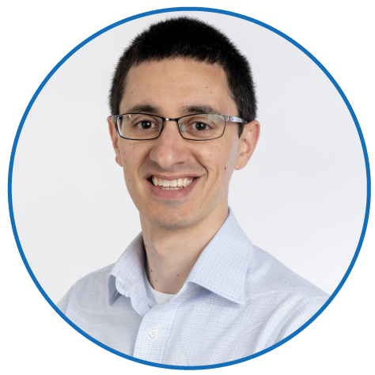
Robert Manguso
Principal Investigator
Assistant Professor of Medicine at Massachusetts General Hospital Cancer Center and Harvard Medical School and an Associate Member at the Broad Institute. He completed his undergraduate degree at Wheaton College in Norton, MA, and his PhD at Harvard Medical school/Dana-Farber Cancer Institute in Nick Haining's lab. His work focuses on using functional genomics to improve our understanding of cancer immunology and the treatment of cancer with immunotherapies. When not using "immunology" to neatly explain conflicting data, he may be found hiking, backcountry skiing, proselytizing hikers and skiers to become backcountry skiers, hanging out with his dogs, and consuming dangerous quantities of ramen.
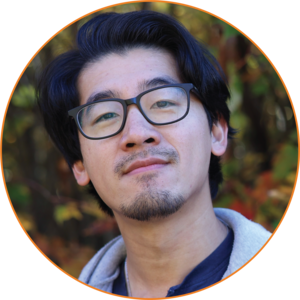
Kevin Bi
Senior Computational Scientist
Specializes in single-cell profiling of clinical tumor specimens. He is a Dorchester resident and proud defender of Boston's rich and diverse food scene. Outside of science he loves cooking from family recipes, hiking, reading, and making beats sampling Chinese and Japanese records from the 70s and 80s. He is highly codependent with his cat 月月.
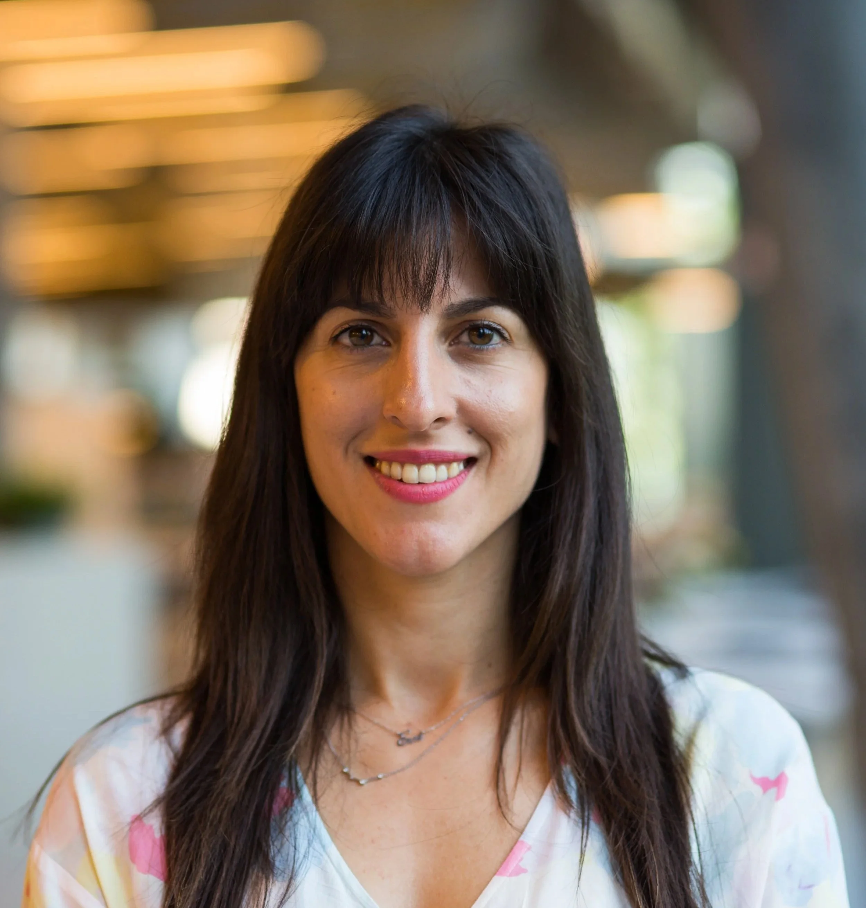
Evangelia Bolli
Postdoctoral Fellow
Joined the lab after completing her PhD at Vrije Universiteit Brussels in Belgium followed by postdoctoral research at the University of Geneva in Switzerland and at Massachusetts General Hospital. She is deeply enthusiastic about myeloid cell biology in cancer. Outside the lab, Eva enjoys playing volleyball and other sports, exploring the arts, spending time outdoors, and, most of all, cuddling with her two furry companions, Mufasa and Toulouse.
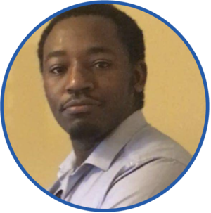
Collins Cheruiyot
Graduate Student
Was a research associate the TIDE team after graduating from Brown University and worked on the mechanisms driving tumor immunotherapy sensitivity to ADAR deletion. Collins is now enrolled in the Immunology PhD program at Harvard Medical School, and studies lipid metabolism and autophagy in anti-tumor immunity.
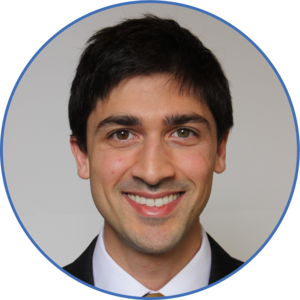
Jordan Chinai
Postdoctoral Fellow
Adult medical oncology fellow in the Dana-Farber/Mass General Brigham program. He completed his MD/PhD at Einstein in New York and did research related to novel checkpoint inhibitors in tumor immunotherapy. His current clinical and research interests surround discovery of targets to enable and enhance responses to immunotherapy in GI malignancies. Outside of work, he enjoys exploring New England and traveling the world trying to meet all of the weird and amazing animals that are out there.
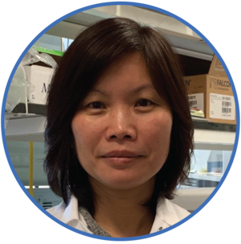
Cun Lan Chuong
in vivo Specialist
Assists with the many mouse experiments that TIDE conducts at the Broad. Outside of work, Lan enjoys watching NFL football. One day, she'd love to purchase an RV mobile home for travel with family and friends.
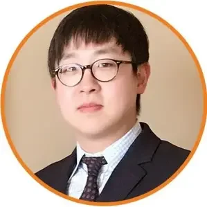
Jooho Chung
Postdoctoral Fellow
Adult medical oncology fellow at Dana Farber Cancer Institute/Massachusetts General Brigham. He is training to be a physician-scientist in the field of bone marrow transplantation/cellular therapy. He completed his PhD at the University of Michigan with Ivan Maillard, studying the role of Notch signaling in alloimmunity. He enjoys watching football and playing tennis, but now has the time to do neither.
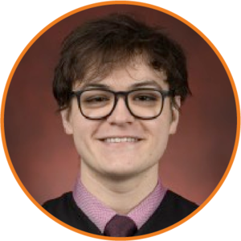
Aidan Cruickshank
Computational Associate
Completed his BSc in Biochemistry and Computer Science at McGill University and is currently finishing up his MSc in Human Genetics from McGill as well. Previously, his research focused on germline whole genome sequencing in cancer patient populations, with a focus on genomic variation relevant to cancer predisposition. Outside of the lab, Aidan enjoys reading sci-fi and fantasy novels, playing video games, and hitting the gym.
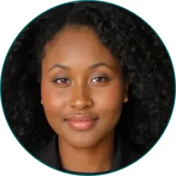
Athaliah Fubara
Masters Student
Currently pursuing the MSc in Biotechnology at ETH Zürich in Switzerland. Originally from Nigeria, she grew up in Ireland and obtained her BSc in Genetics at University College Dublin (UCD), the National University of Ireland. She worked on targeted protein degradation at ETH and mobile genetic elements at UCD. She enjoys sunny days of cycling and picnics, trying diverse cuisines, listening to audiobooks, and suffering at the gym.
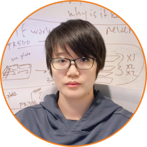
Aiping Jiang
Postdoctoral Fellow
Utilizing in vivo CRISPR screen platform at TIDE to discover new cancer immunotherapy targets and resistance mechanisms. Before joining TIDE, she worked as a postdoc at Harvard Medical School and Children's Hospital Boston in Dr. Timothy Springer's lab and received a Ph.D from Chinese Academy of Sciences, China. In the spare time, she loves playing badminton, jogging along Charles River/ponds, exploring museums.
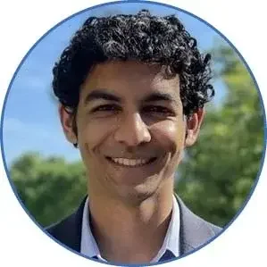
Sachin Kammula
Research Associate
Completed his BS in Chemical and Biomolecular Engineering at Johns Hopkins University. There, he worked to develop platforms for sustained and targeted drug delivery and investigated methods to reduce neural protein aggregation. Beyond science, Sachin can be found playing basketball, searching for new trails to run on, and traveling.
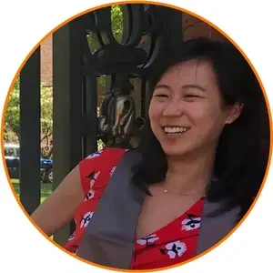
Sarah Kim
Computational Biology Associate
Majored in Computational Biology and was excited to find a position that had both of those words in the title! She enjoys taking the T in the wrong direction and endorsing Julia as the optimal programming language.
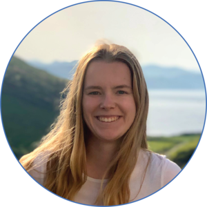
Erin Kistler
Research Associate
Originally from southern California and recently graduated from Denison University with a degree in Biology. At Denison, Erin studied phage-antibiotic synergy as a treatment method for Burkholderia cenocepacia infections. Outside of lab, Erin enjoys reading, running, and watching soccer.
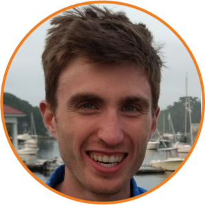
Nelson Knudsen
Research Scientist
Completed his PhD at the Harvard T. H. Chan School of Public Health in Chih-Hao Lee's Lab studying immunometabolism in obesity and exercise physiology. He enjoys running on roads and trails, cycling, and skiing with his dog.
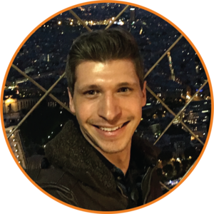
Hans Pope
Research Scientist
Returning to TIDE and the Griffin Lab after 3 years of working at Arsenal Biosciences in South San Francisco developing CAR-T cell therapies. Previously an original member of TIDE, he is both amazed and grateful to have been welcomed back. When away from the bench, he almost certainly skiing, listening to audio books in traffic, or trying to tire out his German shepherd.
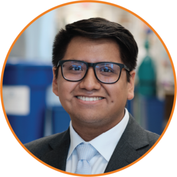
Alex Rojas
Research Associate
Originally from Long Island, New York and a recent graduate from Emory University. At Emory he worked on developing an mRNA delivery system using extracellular vesicles. Outside of the lab Alex enjoys playing volleyball, getting beat up in muay thai, gaming and desperately trying to learn how to cook gourmet dishes.
Yaiza Senent Valero
Postdoctoral Associate
Completed her Ph.D. at the University of Navarra and moved to Boston to pursue her post-doc in the TIDE team. Beyond science, Yaiza is a semiprofessional contemporary dancer and teacher, as well as a skilled painter. When she's not in the lab, dancing or painting, you may find her reading, trying new restaurants, and discovering new places.
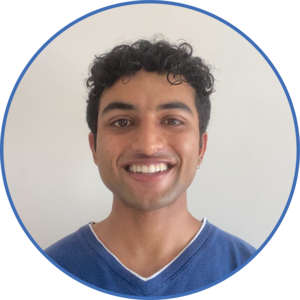
Rohan Shinkre
Research Associate
Originally from San Diego, California and recently graduated from UC Berkeley with a degree in Bioengineering. At Berkeley, he studied the human immune response to dengue virus and investigated the role of neutralizing IgM antibodies in the blood. Outside of lab, Rohan enjoys hiking, live music, and trying new foods.
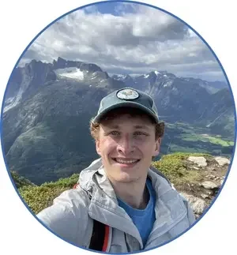
Carl Shirley
Graduate Student
Joined the TIDE team following his obsession with CRISPR screens, a technology he is leveraging to overcome cancer immunotherapy resistance. After graduating from the University of Wisconsin-Madison, he returned to New England to join the Immunology PhD program at Harvard Medical School. He's glad that flying is no longer necessary for hiking, snowboarding or seeing the ocean and has now been well conditioned for the Boston 'winter.'
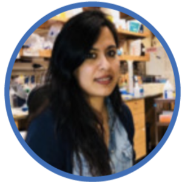
Payal Tiwari
Postdoctoral Fellow
Pursuing her post-doc at the Dana Farber Cancer Institute in the Hahn Lab as well as working in collaboration with the Manguso Lab. Payal completed her Ph.D. at the University of Chicago and then ventured over to Boston to continue her work in cancer research. Payal enjoys cooking excellent Indian dishes, the extremely cold Boston weather, and getting lost on hikes without cell service.
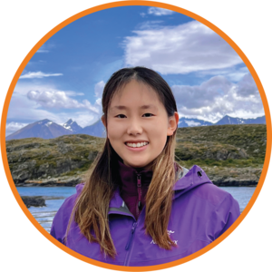
Yixue Wang
Master Student
Originally from Beijing, China and a recent graduate from East China Normal University. Before joining TIDE, her research focuses on the structure biology of transmembrane proteins and developing new therapies for chemo-resistant ovarian cancers. Outside of science, you might find her hiking, traveling, or working as an expedition guide in polar regions.
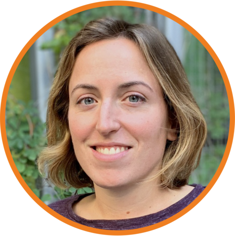
Kathleen Yates
co-Director
Co-leader for TIDE and master of RNA-seq; without her, the lab would be funding-free, an organizational nightmare, and constantly embroiled in pointless bickering. Fueled primarily by coffee and baked goods, she spends her evenings and weekends shuffling her adorable children toward their hopes and dreams, contracting various illnesses and injuries in exotic locations, and generally being a model citizen.
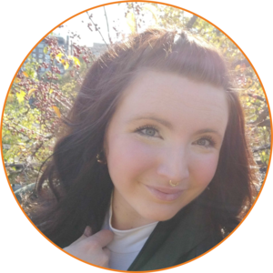
Maria Zschummel
Postdoctoral Fellow
Obtained her bachelor of science in biology at the Humboldt university in Berlin, minoring in chemistry. She continued with her master's in molecular life sciences there and first came into contact and grew a passion for the concept of cellular immunotherapy during an internship on TCR-modified T cells. She pursued her PhD at the MDC berlin with Uta Höpken, where she focused on improving CAR T cell therapy for lymphoma by altering their tumor-homing potential. Co-mentored by Dr. Debattama Sen, Maria focuses on unbiased approaches to enhance T cell cytotoxicity in vitro and in vivo. When she's not fussing over how awesome T cells (and great white sharks) are, Maria enjoys and complains about getting sunburned on hikes, going to concerts and desperately trying to find a decent Pilsner in Boston.
Alumni
- Nuno Alfaiate, Research Associate, is now pursuing his Ph.D. in Europe.
- Peter Allen, RA, now pursuing his Ph.D. at Stanford University.
- Seth Anderson, RA, is currently pursuing his MD/PhD at UPenn.
- Omar Avila Monge, RA, is at pursuing his MD/PhD at Vanderbilt.
- Austin Ayer, RA, now pursuing his MD at Duke University.
- Tyler Balon, RA, is getting his M.D. at the Ohio State University College of Medicine.
- Jerome Catalino, Project Coordinator, is now pursuing graduate Chemical Engineering Studies at Worcester Polytechnic Institute.
- Andi Cheng, RA, is pursuing his MD/PhD at Harvard.
- Kayla Colvin, RA, joined the BBS PhD program at Harvard.
- Thomas Davis, ACB, now works as a software engineer in Boston.
- Peter Du, ACB, now pursuing his PhD in Cancer Biology at Stanford University.
- Juan Dubrot is now a Principal Investigator at Cima Universidad de Navarra in Pamplona, Spain.
- Hakimeh Ebrahimi-Nik, RS, started her own lab at Ohio State.
- Rachel Fetterman, RA, is in medical school at UMass Chan.
- Cong Fu, Postdoctoral Fellow, now working as a Scientist II at Dana-Farber Cancer Institute.
- Kyrellos Ibrahim, RA, getting his Ph.D. at UCSF.
- Arvin Iracheta-Vellve, RS, is now a Senior Scientist at Monte Rose Therapeutics.
- Sarah Kate Lane-Reticker, RA, pursuing her Ph.D. at Harvard University, but still comes by to visit occasionally.
- Robin Keane, RA, studying to be a doctor at University College Dublin.
- Ian Kohnle, RA, now works for the government.
- Jonathan Lopez-Benitez, Project Coordinator, now works as a Research Administrator for the Broad's Office of Sponsored Research.
- Animesh "Ani" Mahapatra, RA, currently pursuing his MD at UCLA.
- Kepler Mears, RA, is pursuing his Ph.D. in the Baym lab at Harvard Medical School.
- Gargi Mishra, RA, now pursuing her MD/PhD at SUNY Upstate.
- Audrey Muscato, RA, went on to graduate school at Harvard University and joined Kathy Burns' lab at DFCI.
- Ashwin Kammula, ACB, is pursuing his MD/PhD at UPenn.
- Celeste Nobrega, Computational Associate, is pursuing private sector computational biology opportunities.
- Sarah Noel, RA, now pursuing her PhD at Yale University.
- Kyle Ockerman, RA, studying medicine at the University of Florida.
- Kira Olander, ACB, is now working on her Ph.D. at the University of Washington (when she's not skiing).
- Arpit Panda, ACB, enrolled in the MD/PhD program at the University of Chicago.
- Max Pass, RA, currently pursuing a PhD at UCSF.
- James Patti, RA, is pursuing his M.D. at Tufts Medical School.
- Jonathan Perera, ACB, is pursuing his MD/PhD at Stanford.
- Mitra Pezeshki, RA, is now pursuing her PhD at The Rockefeller University.
- Connor Antonio Richterich was a rotating student and now working on his Ph.D. in the Schumacher lab at the Netherlands Cancer Institute and in Cathy Wu's lab at DFCI.
- Andrea Rivera, RA, now studying medicine.
- Emily Robitschek, RA, joined David Liu's (DFCI) as a computational biologist.
- Emily Schneider, RA, pursuing her MD/PhD at Harvard Medical School and now working with Marcela Maus.
- Maggie Sharma, Project Manager, now works in Program Management at Alnylam nearby, but you can often find her crashing Manguso Lab events.
- Juliette Suermondt, Visiting Graduate Student, is completing her Ph.D. at the Karolinska Institutet.
- Hsiao-Wei Tsao, Research Scientist, is now taking some time off to be with family.
- Clara Wolfe, RA, is now pursuing her Ph.D. at Johns Hopkins University.
- Margaret Zimmer, RA, enrolled in the Biological and Biomedical Sciences (BBS) Ph.D. program at Harvard University but is now a scout for the Pittsburg Pirates.